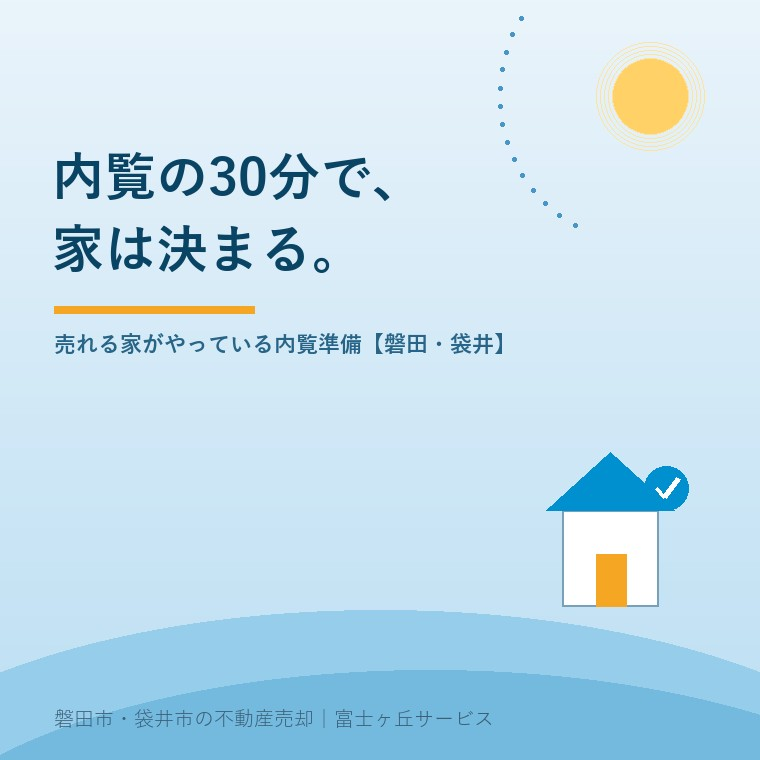

2026年8月3日｜カテゴリ：売却の実務・内覧

この記事の要点
Q. 売り出し中の実家に内覧の申し込みが入った。何を準備すればいい？
A. 買主の印象は、玄関を入って最初の数分でほぼ決まります。準備の基本は「光・風・匂い・水回り」の4つ。そして夏は、蒸し暑い空き家がそれだけで第一印象を落とすため、事前の換気と冷房が欠かせません。この記事のチェックリストを使って、内覧前日までに整えておきましょう。磐田市・袋井市では、介護施設の運営から不動産事業を始めた富士ヶ丘サービスのような地域密着の会社が、内覧の準備から立ち会いまで並走します。
売却活動が始まると、いよいよ「内覧」──購入希望者の見学です。段取りの記事で書いたとおり、売却期間を左右するのはこの内覧の成約率。そして現場の実感を正直に言うと、同じ価格帯で「決まる家」と「残る家」の差は、物件そのものより「見せ方」にあります。築年数や間取りは変えられませんが、印象は今日から変えられる。お盆の帰省に合わせて見学する買主が増えるこの時期に、売れる家がやっている準備をまとめます。
買主は内覧までに、写真と図面を何度も見ています。つまり内覧とは「写真との答え合わせ」。玄関を開けた瞬間に暗い・臭う・散らかっているという体験をすると、その後どれだけ良い部屋を見ても、第一印象のマイナスを引きずります。逆に、明るくて風の通る家は「大切にされてきた家だ」という信頼になり、多少の古さは「味」に変わります。内覧準備とは、掃除のことではなく、最初の数分の体験を設計することです。
| 基本 | やること |
|---|---|
| 光 | 全部屋のカーテン・雨戸を開け、照明は昼間でも全点灯。切れた電球は交換（数百円で家の印象が変わる最安の投資） |
| 風 | 内覧の1時間前までに全窓を開けて空気を入れ替える。閉め切った家の「こもった空気」は、住んでいた人には分からない |
| 匂い | 靴・ペット・線香・カビ。芳香剤でごまかすより換気で抜くのが正解。強い芳香剤は「何か隠している？」と勘ぐられることも |
| 水回り | キッチン・風呂・トイレ・洗面の水垢とカビ取り。買主が一番シビアに見る場所で、清掃の費用対効果が最大。手に負えなければハウスクリーニング（数万円）も検討 |
8月の内覧でいちばん多い失敗が、これです。閉め切った空き家は室温が40度近くになり、汗だくの見学は5分で切り上げられて終わります。暑さは「この家は住みにくい」という体験として記憶される──物件のせいではないのに、です。
居住中の家は、生活感を「消す」のではなく「間引く」のがコツです。床とテーブルの上に物がない状態を目標に、写真・洗濯物・水回りの私物をしまう。家具があること自体は、部屋の使い方が伝わるプラス材料です。内覧中の対応は不動産会社に任せ、ご家族は質問されたときに答える程度が、買主がいちばん見やすい距離感です。
空き家は、定期的な換気と通水（排水の悪臭防止）を続け、電気と水道は内覧期間中は止めないこと。照明が点かない・トイレが流せない家は印象も検証もできません。残置物は原則ゼロが基本ですが、何もないガランとした家が寒々しく見える場合は、カーテンだけ残す・スリッパを揃えるといった最小限のしつらえが効きます。
| No. | チェック |
|---|---|
| 1 | 外まわり：草刈り・玄関まわりの掃き掃除・ポストの郵便物回収 |
| 2 | 全部屋のカーテン・雨戸を開けられる状態に（建て付け確認） |
| 3 | 照明の全点灯確認・切れた電球の交換 |
| 4 | 水回り4か所（キッチン・風呂・トイレ・洗面）の清掃 |
| 5 | 換気（前日＋当日1時間前）と匂いの確認（家族以外の鼻で） |
| 6 | 床とテーブルの上に物がない状態にする |
| 7 | 夏：エアコン・扇風機の準備と事前冷房／冬は暖房 |
| 8 | スリッパ・冷茶の用意 |
| 9 | 聞かれそうなことの整理（築年・修繕歴・境界・水害・町内会） |
| 10 | 貴重品・個人情報（郵便物・通帳類）を見えない場所へ |
9番は意外に重要です。前回の記事で書いたとおり、いまの買主は具体的な質問を持って内覧に来ます。修繕の履歴や近所のことを正直にすらすら答えられる売主の家は、それだけで信頼されます。
この地域の買主は、車で複数の物件を1日で回るのが普通です。つまり、外観と庭が「入店前の看板」。中がどれだけ綺麗でも、草ぼうぼうの庭と汚れた外壁で「次に行こうか」となることが実際にあります。予算をかけるなら、外まわりの手入れ→水回り清掃→室内の順が、磐田・袋井では正解です。当社は内覧の立ち会いだけでなく、事前の「見せ方チェック」から同行しています。準備の労力は、確実に成約率と価格に返ってきます。
富士ヶ丘サービスは、磐田市・袋井市に特化した地域密着の会社として、内覧の準備から立ち会い、その後の交渉まで並走します。「うちの家、どう見せればいい？」というご相談は実家じまい相談室からどうぞ。
ふじがおか実家カルテ｜売り出し前の「見せ方」準備にも
直すべき点と、そのままでいい点。売る前に、まず1冊に。
登記情報と現地の状況から、売却前に整えるべきポイントを宅建士が整理してお渡しします。内覧対応のご相談もあわせてどうぞ。
本記事は2026年8月3日時点の情報と、当社の営業経験に基づく実務上の工夫をまとめたものです。物件の状況により有効な準備は異なります。個別のご相談は当社までどうぞ。
磐田市・袋井市の実家じまい・相続空き家相談
固定資産税通知書だけでも相談できます
住所があいまいでも、通知書や写真から名義・道路・農地・残置物の確認順を整理します。カルテ申込またはLINEで状況を送ってください。
富士ヶ丘サービス株式会社／静岡県磐田市見付5789番地1／TEL:0538-31-3308／静岡県知事 (2) 第14083号／代表取締役・宅地建物取引士 大石 浩之